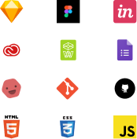

"Simplicity is the ultimate sophistication."
- Leonardo da Vinci
Hi! My name is Anthony, and I like to make things. I'm a problem solver that strives to uncover solutions through creative, thoughtful, efficient, and effective designs.
Background
Since I was young, music has always been a very big part of my life, starting with learning piano at age six. I was a part of different musical acts, playing local shows and writing songs with other musicians. As someone that was generaly shy and introverted, getting in front of a crowd to perform was daunting at times, but with practice and preparation, it became second nature. This experience translated to the professional world, making it easier for me to talk and present to teammates, clients, and people.
Along with a love of music came a love of technology. Beginning with a regular store-bought computer, I eventually dove into the world of computers, understanding the different ways you can upgrade and improve different elements to make a powerful machine. This love eventually made me into a tech junkie, as I can appreciate how far we progressed over the years from our days of huge CRT PC Monitors to flat-screen displays being the norm.
Past Experiences & The Transition
My dive into UX Design began from a desire for change. Graduating with a B.A. in History/Geography, I was initially going down the path to become a teacher. After working at a local credit union for several years and climbing up the corporate ladder, I finally got an opportunity to handle my first of two teaching positions as the credit union's Financial Education Counselor.
Within the role, I tackled creating and designing educational content to help credit union members and people within local communities with their finances, with topics such as establishing budgets, handling credit wisely, and preparing to become a first-time homeowner. Content ranged from simple presentations/seminars to providing resources, handouts, and spreadsheets to use at individual meetings with clients.
Over time, my accomplishments within the role led me to my second teaching position withint he credit union's training team as their Technical Specialist and a Training Facilitator. In this role, I worked on various technological projects that were used both internally and externally. I learned the main goals and aspirations of the stakeholders with each project, and how it would impact the users. In this role, I always had to keep the end-user in mind, be it members (customers) or staff. However. as I assisted in creating training content for these projects, i was tasked with focusing more on our staff's training needs, utilizing both traditional and technological methods of instruction.
Eventually, I felt that I could be doing more and have a bigger impact on the world, creating something bigger than just working on training content for the staff of a credit union. With taht said, I began down the path of UX Design by enrolling in the Bloc UX Design Apprenticeship.
The Process
Design is important to me as the end user always has to be in focus. With every decision a designer makes for a product, they have to think about the consequences. I'm looking to help create solutions that will be user-friendly, while accomplishing the tasks the product is intended to complete. As a user of various products myself, picking up on problems/issues and empathizing with frustrated users is something I can relate to.
Through the iterative process of design, I seek to connect clients with wonderfully-created products through continuously understanding what they desire and what they want to accomplish. Using UX Research techniques and understanding the end user, I've been able to solve these problems and create effective, efficient experiences. Whether making a more effective process for user-friendly onboarding or designing a full-functioning app from scratch, I enjoy the opportunity to leave a mark on the world with each project. With a background in teaching, passion in technology, and an open mind to creativity, anything is possible.
Tools & Technologies
Things I Enjoy Outside of Design...
- Spending timg with my girlfriend, friends, and family
- Music- Rock & EDM
- Watching Sports- I'm a Jets, Yankees, and Islanders fan
- Watching eSports, particularly League of Legends
- Gaming
- Starbucks